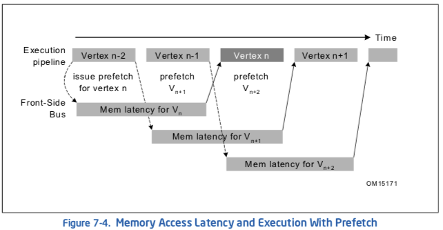

7 优化cache使用¶
本文更新于 2018.12.01
格式说明:
- 重点, 需理解
- 次要重点
- 还未理解的内容
- zzq注解 批注,扩展阅读资料等
- note/warning等注解: 原文内的注解或自己添加的备忘信息
Over the past decade, processor speed has increased. Memory access speed has increased at a slower pace. The resulting disparity has made it important to tune applications in one of two ways: either (a) a majority of data accesses are fulfilled from processor caches, or (b) effectively masking memory latency to utilize peak memory bandwidth as much as possible.
Hardware prefetching mechanisms are enhancements in microarchitecture to facilitate the latter aspect, and will be most effective when combined with software tuning. The performance of most applications can be considerably improved if the data required can be fetched from the processor caches or if memory traffic can take advantage of hardware prefetching effectively.
Standard techniques to bring data into the processor before it is needed involve additional programming which can be difficult to implement and may require special steps to prevent performance degradation. Streaming SIMD Extensions addressed this issue by providing various prefetch instructions.
Streaming SIMD Extensions introduced the various non-temporal store instructions. SSE2 extends this support to new data types and also introduce non-temporal store support for the 32-bit integer registers.
This chapter focuses on:
- Hardware Prefetch Mechanism, Software Prefetch and Cacheability Instructions — Discusses micro-architectural feature and instructions that allow you to affect data caching in an application.
- Memory Optimization Using Hardware Prefetching, Software Prefetch and Cacheability Instructions — Discusses techniques for implementing memory optimizations using the above instructions.
- Using deterministic cache parameters to manage cache hierarchy.
注解
In a number of cases presented, the prefetching and cache utilization described are specific to current implementations of Intel NetBurst microarchitecture but are largely applicable for the future processors.
7.1 GENERAL PREFETCH CODING GUIDELINES¶
The following guidelines will help you to reduce memory traffic and utilize peak memory system bandwidth more effectively when large amounts of data movement must originate from the memory system:
Take advantage of the hardware prefetcher’s ability to prefetch data that are accessed in linear patterns, in either a forward or backward direction.
Take advantage of the hardware prefetcher’s ability to prefetch data that are accessed in a regular pattern with access strides that are substantially smaller than half of the trigger distance of the hardware prefetch.
Facilitate compiler optimization by:
- Minimize use of global variables and pointers.
- Minimize use of complex control flow.
- Use the const modifier, avoid register modifier.
- Choose data types carefully (see below) and avoid type casting.
Use cache blocking techniques (for example, strip mining) as follows:
- Improve cache hit rate by using cache blocking techniques such as strip-mining (one dimensional arrays) or loop blocking (two dimensional arrays).
- Explore using hardware prefetching mechanism if your data access pattern has sufficient regularity to allow alternate sequencing of data accesses (for example: tiling) for improved spatial locality. Otherwise use PREFETCHNTA.
Balance single-pass versus multi-pass execution:
- Single-pass, or unlayered execution passes a single data element through an entire computation pipeline.
- Multi-pass, or layered execution performs a single stage of the pipeline on a batch of data elements before passing the entire batch on to the next stage.
- If your algorithm is single-pass use PREFETCHNTA. If your algorithm is multi-pass use PREFETCHT0.
Resolve memory bank conflict issues. Minimize memory bank conflicts by applying array grouping to group contiguously used data together or by allocating data within 4-KByte memory pages.
Resolve cache management issues. Minimize the disturbance of temporal data held within processor’s caches by using streaming store instructions.
Optimize software prefetch scheduling distance:
- Far ahead enough to allow interim computations to overlap memory access time.
- Near enough that prefetched data is not replaced from the data cache.
Use software prefetch concatenation. Arrange prefetches to avoid unnecessary prefetches at the end of an inner loop and to prefetch the first few iterations of the inner loop inside the next outer loop.
Minimize the number of software prefetches. Prefetch instructions are not completely free in terms of bus cycles, machine cycles and resources; excessive usage of prefetches can adversely impact application performance.
Interleave prefetches with computation instructions. For best performance, software prefetch instructions must be interspersed with computational instructions in the instruction sequence (rather than clustered together).
7.2 PREFETCH AND CACHEABILITY INSTRUCTIONS¶
The PREFETCH instruction, inserted by the programmers or compilers, accesses a minimum of two cache lines of data on the Pentium 4 processor prior to the data actually being needed (one cache line of data on the Pentium M processor). This hides the latency for data access in the time required to process data already resident in the cache.
Many algorithms can provide information in advance about the data that is to be required. In cases where memory accesses are in long, regular data patterns; the automatic hardware prefetcher should be favored over software prefetches.
The cacheability control instructions allow you to control data caching strategy in order to increase cache efficiency and minimize cache pollution.
Data reference patterns can be classified as follows:
- Temporal — Data will be used again soon. (时间局部性)
- Spatial — Data will be used in adjacent locations (for example, on the same cache line). (空间局部性)
- Non-temporal — Data which is referenced once and not reused in the immediate future (for example, for some multimedia data types, as the vertex buffer in a 3D graphics application).
These data characteristics are used in the discussions that follow.
7.3 PREFETCH¶
This section discusses the mechanics of the software PREFETCH instructions. In general, software prefetch instructions should be used to supplement the practice of tuning an access pattern to suit the automatic hardware prefetch mechanism.
7.3.1 Software Data Prefetch¶
The PREFETCH instruction can hide the latency of data access in performance-critical sections of application code by allowing data to be fetched in advance of actual usage. PREFETCH instructions do not change the user-visible semantics of a program, although they may impact program performance. PREFETCH merely provides a hint to the hardware and generally does not generate exceptions or faults.
PREFETCH loads either non-temporal data or temporal data in the specified cache level. This data access type and the cache level are specified as a hint. Depending on the implementation, the instruction fetches 32 or more aligned bytes (including the specified address byte) into the instruction-specified cache levels.
PREFETCH is implementation-specific; applications need to be tuned to each implementation to maximize performance.
注解
Using the PREFETCH instruction is recommended only if data does not fit in cache. Use of software prefetch should be limited to memory addresses that are managed or owned within the application context. Prefetching to addresses that are not mapped to physical pages can experience non-deterministic performance penalty. For example specifying a NULL pointer (0L) as address for a prefetch can cause long delays.
PREFETCH provides a hint to the hardware; it does not generate exceptions or faults except for a few special cases (see Section 7.3.3, “Prefetch and Load Instructions”). However, excessive use of PREFETCH instructions may waste memory bandwidth and result in a performance penalty due to resource constraints.
Nevertheless, PREFETCH can lessen the overhead of memory transactions by preventing cache pollution and by using caches and memory efficiently. This is particularly important for applications that share critical system resources, such as the memory bus. See an example in Section 7.6.2.1, “Video Encoder.”
PREFETCH is mainly designed to improve application performance by hiding memory latency in the background. If segments of an application access data in a predictable manner (for example, using arrays with known strides), they are good candidates for using PREFETCH to improve performance.
Use the PREFETCH instructions in:
- Predictable memory access patterns.
- Time-consuming innermost loops.
- Locations where the execution pipeline may stall if data is not available.
7.3.2 Prefetch Instructions¶
Streaming SIMD Extensions include four PREFETCH instruction variants; one non-temporal and three temporal. They correspond to two types of operations, temporal and non-temporal. Additionally, the PREFETCHW instruction is a hint to fetch data closer to the processor and invalidates any other cached copy in anticipation of a write.
注解
At the time of PREFETCH, if data is already found in a cache level that is closer to the processor than the cache level specified by the instruction, no data movement occurs.
The implementation details of the prefetch hint instructions vary across different microarchitectures. A summary is given below.
PREFETCHNTA — fetch data into non-temporal cache close to the processor, minimizing cache pollution.
- Pentium III processor: 1st level cache.
- Processors based on Intel NetBurst microarchitecture: 2nd level cache.
- Intel Core duo, Core 2 processors, Intel Atom processors: 1st but not 2nd level cache.
- Intel Core Processors based on Nehalem, Westmere, Sandy Bridge and newer microarchitectures: 1st, but not 2nd level cache; may fetch into 3rd level cache with fast replacement.
- Intel Xeon Processors based on Nehalem, Westmere, Sandy Bridge and newer microarchitectures: must fetch into 3rd level cache with fast replacement.
PREFETCHT0 — fetch data into all cache levels.
- Pentium III processor: 1st and 2nd level cache.
- Processors based on Intel NetBurst microarchitecture: 2nd level cache.
- Intel Core duo, Core 2 processors, Intel Atom processors: 1st and 2nd level cache.
- Intel Core Processors based on Nehalem, Westmere, Sandy Bridge and newer microarchitectures: 1st, 2nd and 3rd level cache.
- Intel Xeon Processors based on Nehalem, Westmere, Sandy Bridge and newer microarchitectures: 1st, 2nd and 3rd level cache.
PREFETCHT1 — fetch data into 2nd and 3rd level caches.
- Pentium III processor: 2nd level cache.
- Processors based on Intel NetBurst microarchitecture: 2nd level cache.
- Intel Core duo, Core 2 processors, Intel Atom processors: 2nd level cache.
- Intel Core Processors based on Nehalem, Westmere, Sandy Bridge and newer microarchitectures: 2nd and 3rd level cache.
- Intel Xeon Processors based on Nehalem, Westmere, Sandy Bridge and newer microarchitectures: 2nd and 3rd level cache.
PREFETCHT2 — this instruction is identical to PREFETCHT1.
- Pentium III processor: 2nd level cache.
- Processors based on Intel NetBurst microarchitecture: 2nd level cache.
- Intel Core duo, Core 2 processors, Intel Atom processors: 2nd level cache.
- Intel Core Processors based on Nehalem, Westmere, Sandy Bridge and newer microarchitectures: 2nd and 3rd level cache.
- Intel Xeon Processors based on Nehalem, Westmere, Sandy Bridge and newer microarchitectures: 2nd and 3rd level cache.
PREFETCHW — fetch data into cache in anticipation of write; invalidate cached copies.
- Intel Atom processors based on Silvermont and newer microarchitectures: 1st and 2nd level cache.
- Intel Core Processors based on Broadwell and Skylake microarchitectures: 1st, 2nd and 3rd level cache.
- Intel Xeon Processors based on Broadwell and Skylake microarchitectures: 1st, 2nd and 3rd level cache.
7.3.3 Prefetch and Load Instructions¶
Most of the recent generations of microarchitectures have decoupled execution and memory pipelines. This allows instructions to be executed independently with memory accesses if there are no data and resource dependencies. Programs or compilers can use dummy load instructions to imitate PREFETCH functionality, but preloading is not completely equivalent to using PREFETCH instructions. PREFETCH provides greater performance than preloading.
PREFETCH can provide greater performance than preloading because:
- Has no destination register, it only updates cache lines.
- Does not stall the normal instruction retirement.
- Does not affect the functional behavior of the program.
- Has no cache line split accesses.
- Does not cause exceptions except when the LOCK prefix is used. The LOCK prefix is not a valid prefix for use with PREFETCH.
- Does not complete its own execution if that would cause a fault.
The advantages of PREFETCH over preloading instructions are processor specific. This may change in the future.
There are cases where a PREFETCH will not perform the data prefetch. These include:
- In older microarchitectures, PREFETCH causing a Data Translation Lookaside Buffer (DTLB) miss would be dropped. In processors based on Nehalem, Westmere, Sandy Bridge, and newer microar-chitectures, Intel Core 2 processors, and Intel Atom processors, PREFETCH causing a DTLB miss can be fetched across a page boundary.
- An access to the specified address that causes a fault/exception.
- If the memory subsystem runs out of request buffers between the first-level cache and the second-level cache.
- PREFETCH targets an uncacheable memory region (for example, USWC and UC).
- The LOCK prefix is used. This causes an invalid opcode exception.
7.4 CACHEABILITY CONTROL¶
This section covers the mechanics of cacheability control instructions.
7.4.1 The Non-temporal Store Instructions¶
This section describes the behavior of streaming stores and reiterates some of the information presented in the previous section.
In Streaming SIMD Extensions, the MOVNTPS, MOVNTPD, MOVNTQ, MOVNTDQ, MOVNTI, MASKMOVQ and MASKMOVDQU instructions are streaming, non-temporal stores. With regard to memory characteristics and ordering, they are similar to the Write-Combining (WC) memory type:
- Write combining — Successive writes to the same cache line are combined.
- Write collapsing — Successive writes to the same byte(s) result in only the last write being visible.
- Weakly ordered — No ordering is preserved between WC stores or between WC stores and other loads or stores.
- Uncacheable and not write-allocating — Stored data is written around the cache and will not generate a read-for-ownership bus request for the corresponding cache line.
7.4.1.1 Fencing¶
Because streaming stores are weakly ordered, a fencing operation is required to ensure that the stored data is flushed from the processor to memory. Failure to use an appropriate fence may result in data being “trapped” within the processor and will prevent visibility of this data by other processors or system agents.
WC stores require software to ensure coherence of data by performing the fencing operation. See Section 7.4.5, “FENCE Instructions.”
7.4.1.2 Streaming Non-temporal Stores¶
Streaming stores can improve performance by:
- Increasing store bandwidth if the 64 bytes that fit within a cache line are written consecutively (since they do not require read-for-ownership bus requests and 64 bytes are combined into a single bus write transaction).
- Reducing disturbance of frequently used cached (temporal) data (since they write around the processor caches).
Streaming stores allow cross-aliasing of memory types for a given memory region. For instance, a region may be mapped as write-back (WB) using page attribute tables (PAT) or memory type range registers (MTRRs) and yet is written using a streaming store.
7.4.1.3 Memory Type and Non-temporal Stores¶
Memory type can take precedence over a non-temporal hint, leading to the following considerations:
If the programmer specifies a non-temporal store to strongly-ordered uncacheable memory (for example, Uncacheable (UC) or Write-Protect (WP) memory types), then the store behaves like an uncacheable store. The non-temporal hint is ignored and the memory type for the region is retained.
If the programmer specifies the weakly-ordered uncacheable memory type of Write-Combining (WC), then the non-temporal store and the region have the same semantics and there is no conflict.
If the programmer specifies a non-temporal store to cacheable memory (for example, Write-Back (WB) or Write-Through (WT) memory types), two cases may result:
CASE 1 — If the data is present in the cache hierarchy, the instruction will ensure consistency. A particular processor may choose different ways to implement this. The following approaches are probable: (a) updating data in-place in the cache hierarchy while preserving the memory type semantics assigned to that region or (b) evicting the data from the caches and writing the new non-temporal data to memory (with WC semantics).
The approaches (separate or combined) can be different for future processors. Pentium 4, Intel Core Solo and Intel Core Duo processors implement the latter policy (of evicting data from all processor caches). The Pentium M processor implements a combination of both approaches.
If the streaming store hits a line that is present in the first-level cache, the store data is combined in place within the first-level cache. If the streaming store hits a line present in the second-level, the line and stored data is flushed from the second-level to system memory.
CASE 2 — If the data is not present in the cache hierarchy and the destination region is mapped as WB or WT; the transaction will be weakly ordered and is subject to all WC memory semantics. This non-temporal store will not write-allocate. Different implementations may choose to collapse and combine such stores.
7.4.1.4 Write-Combining¶
Generally, WC semantics require software to ensure coherence with respect to other processors and other system agents (such as graphics cards). Appropriate use of synchronization and a fencing operation must be performed for producer-consumer usage models (see Section 7.4.5, “FENCE Instructions”).
Fencing ensures that all system agents have global visibility of the stored data. For instance, failure to fence may result in a written cache line staying within a processor, and the line would not be visible to other agents.
For processors which implement non-temporal stores by updating data in-place that already resides in the cache hierarchy, the destination region should also be mapped as WC. Otherwise, if mapped as WB or WT, there is a potential for speculative processor reads to bring the data into the caches. In such a case, non-temporal stores would then update in place and data would not be flushed from the processor by a subsequent fencing operation.
The memory type visible on the bus in the presence of memory type aliasing is implementation-specific. As one example, the memory type written to the bus may reflect the memory type for the first store to the line, as seen in program order. Other alternatives are possible. This behavior should be considered reserved and dependence on the behavior of any particular implementation risks future incompatibility.
7.4.2 Streaming Store Usage Models¶
The two primary usage domains for streaming store are coherent requests and non-coherent requests.
7.4.2.1 Coherent Requests¶
Coherent requests are normal loads and stores to system memory, which may also hit cache lines present in another processor in a multiprocessor environment. With coherent requests, a streaming store can be used in the same way as a regular store that has been mapped with a WC memory type (PAT or MTRR). An SFENCE instruction must be used within a producer-consumer usage model in order to ensure coherency and visibility of data between processors.
Within a single-processor system, the CPU can also re-read the same memory location and be assured of coherence (that is, a single, consistent view of this memory location). The same is true for a multiprocessor (MP) system, assuming an accepted MP software producer-consumer synchronization policy is employed.
7.4.2.2 Non-coherent requests¶
Non-coherent requests arise from an I/O device, such as an AGP graphics card, that reads or writes system memory using non-coherent requests, which are not reflected on the processor bus and thus will not query the processor’s caches. An SFENCE instruction must be used within a producer-consumer usage model in order to ensure coherency and visibility of data between processors. In this case, if the processor is writing data to the I/O device, a streaming store can be used with a processor with any behavior of Case 1 (Section 7.4.1.3) only if the region has also been mapped with a WC memory type (PAT, MTRR).
注解
Failure to map the region as WC may allow the line to be speculatively read into the processor caches (via the wrong path of a mispredicted branch).
In case the region is not mapped as WC, the streaming might update in-place in the cache and a subsequent SFENCE would not result in the data being written to system memory. Explicitly mapping the region as WC in this case ensures that any data read from this region will not be placed in the processor’s caches. A read of this memory location by a non-coherent I/O device would return incorrect/out-of-date results.
For a processor which solely implements Case 2 (Section 7.4.1.3), a streaming store can be used in this non-coherent domain without requiring the memory region to also be mapped as WB, since any cached data will be flushed to memory by the streaming store.
7.4.3 Streaming Store Instruction Descriptions¶
MOVNTQ/MOVNTDQ (non-temporal store of packed integer in an MMX technology or Streaming SIMD Extensions register) store data from a register to memory. They are implicitly weakly-ordered, do no write-allocate, and so minimize cache pollution.
MOVNTPS (non-temporal store of packed single precision floating-point) is similar to MOVNTQ. It stores data from a Streaming SIMD Extensions register to memory in 16-byte granularity. Unlike MOVNTQ, the memory address must be aligned to a 16-byte boundary or a general protection exception will occur. The instruction is implicitly weakly-ordered, does not write-allocate, and thus minimizes cache pollution.
MASKMOVQ/MASKMOVDQU (non-temporal byte mask store of packed integer in an MMX technology or Streaming SIMD Extensions register) store data from a register to the location specified by the EDI register. The most significant bit in each byte of the second mask register is used to selectively write the data of the first register on a per-byte basis. The instructions are implicitly weakly-ordered (that is, successive stores may not write memory in original program-order), do not write-allocate, and thus mini- mize cache pollution.
7.4.4 The Streaming Load Instruction¶
SSE4.1 introduces the MOVNTDQA instruction. MOVNTDQA loads 16 bytes from memory using a non- temporal hint if the memory source is WC type. For WC memory type, the non-temporal hint may be implemented by loading into a temporary internal buffer with the equivalent of an aligned cache line without filling this data to the cache. Subsequent MOVNTDQA reads to unread portions of the buffered WC data will cause 16 bytes of data transferred from the temporary internal buffer to an XMM register if data is available.
If used appropriately, MOVNTDQA can help software achieve significantly higher throughput when loading data in WC memory region into the processor than other means.
Chapter 1 provides a reference to an application note on using MOVNTDQA. Additional information and requirements to use MOVNTDQA appropriately can be found in Chapter 12, “Programming with SSE3, SSSE3 and SSE4” of Intel® 64 and IA-32 Architectures Software Developer’s Manual, Volume 1, and the instruction reference pages of MOVNTDQA in Intel® 64 and IA-32 Architectures Software Developer’s Manual, Volume 2A.
7.4.5 FENCE Instructions¶
The following fence instructions are available: SFENCE, lFENCE, and MFENCE.
7.4.5.1 SFENCE Instruction¶
The SFENCE (STORE FENCE) instruction makes it possible for every STORE instruction that precedes an SFENCE in program order to be globally visible before any STORE that follows the SFENCE. SFENCE provides an efficient way of ensuring ordering between routines that produce weakly-ordered results.
The use of weakly-ordered memory types can be important under certain data sharing relationships (such as a producer-consumer relationship). Using weakly-ordered memory can make assembling the data more efficient, but care must be taken to ensure that the consumer obtains the data that the producer intended to see.
Some common usage models may be affected by weakly-ordered stores. Examples are:
- Library functions, which use weakly-ordered memory to write results.
- Compiler-generated code, which also benefits from writing weakly-ordered results.
- Hand-crafted code.
The degree to which a consumer of data knows that the data is weakly-ordered can vary for different cases. As a result, SFENCE should be used to ensure ordering between routines that produce weakly- ordered data and routines that consume this data.
7.4.5.2 LFENCE Instruction¶
The LFENCE (LOAD FENCE) instruction makes it possible for every LOAD instruction that precedes the LFENCE instruction in program order to be globally visible before any LOAD instruction that follows the LFENCE.
The LFENCE instruction provides a means of segregating LOAD instructions from other LOADs.
7.4.5.3 MFENCE Instruction¶
The MFENCE (MEMORY FENCE) instruction makes it possible for every LOAD/STORE instruction preceding MFENCE in program order to be globally visible before any LOAD/STORE following MFENCE. MFENCE provides a means of segregating certain memory instructions from other memory references.
The use of a LFENCE and SFENCE is not equivalent to the use of a MFENCE since the load and store fences are not ordered with respect to each other. In other words, the load fence can be executed before prior stores and the store fence can be executed before prior loads.
MFENCE should be used whenever the cache line flush instruction (CLFLUSH) is used to ensure that speculative memory references generated by the processor do not interfere with the flush. See Section 7.4.6, “CLFLUSH Instruction.”
7.4.6 CLFLUSH Instruction¶
The CLFLUSH instruction invalidates the cache line associated with the linear address that contain the byte address of the memory location, from all levels of the processor cache hierarchy (data and instruc- tion). This invalidation is broadcast throughout the coherence domain. If, at any level of the cache hierarchy, a line is inconsistent with memory (dirty), it is written to memory before invalidation. Other characteristics include:
- The data size affected is the cache coherency size, which is enumerated by the CPUID instruction. It is typically 64 bytes.
- The memory attribute of the page containing the affected line has no effect on the behavior of this instruction.
- The CLFLUSH instruction can be used at all privilege levels and is subject to all permission checking and faults associated with a byte load.
Executions of the CLFLUSH instruction are ordered with respect to each other and with respect to writes, locked read-modify-write instructions, fence instructions, and executions of CLFLUSHOPT to the same cache line(注1). They are not ordered with respect to executions of CLFLUSHOPT to different cache lines. For updated memory order details of CLFLUSH and other memory traffic, please refer to the CLFLUSH reference pages in Chapter 3 of Intel® 64 and IA-32 Architectures Software Developer’s Manual, Volume 2A, and the “Memory Ordering” section in Chapter 8 of Intel® 64 and IA-32 Architectures Software Developer’s Manual, Volume 3A.
As an example, consider a video usage model where a video capture device is using non-coherent accesses to write a capture stream directly to system memory. Since these non-coherent writes are not broadcast on the processor bus, they will not flush copies of the same locations that reside in the processor caches. As a result, before the processor re-reads the capture buffer, it should use CLFLUSH to ensure that stale, cached copies of the capture buffer are flushed from the processor caches.
注1: Memory order recommendation of CLFLUSH in previous manuals had required software to add MFENCE after CLFLUSH. MFENCE is not required following CLFLUSH as all processors implementing the CLFLUSH instruction also order it relative to the other operations enumerated above.
Example 7-1 provides pseudo-code for CLFLUSH usage.
Example 7-1. Pseudo-code Using CLFLUSH:
while (!buffer_ready} {}
sfence
for(i=0;i<num_cachelines;i+=cacheline_size) {
clflush (char *)((unsigned int)buffer + i)
}
prefnta buffer[0];
VAR = buffer[0];
The throughput characteristics of using CLFLUSH to flush cache lines can vary significantly depending on several factors. In general using CLFLUSH back-to-back to flush a large number of cache lines will expe- rience larger cost per cache line than flushing a moderately-sized buffer (e.g. less than 4KB); the reduc- tion of CLFLUSH throughput can be an order of magnitude. Flushing cache lines in modified state are more costly than flushing cache lines in non-modified states.
7.4.7 CLFLUSHOPT Instruction¶
The CLFLUSHOPT instruction is first introduced in the 6th Generation Intel Core Processors. Similar to CLFLUSH, CLFLUSHOPT invalidates the cache line associated with the linear address that contain the byte address of the memory location, in all levels of the processor cache hierarchy (data and instruction).
Executions of the CLFLUSHOPT instruction are ordered with respect to locked read-modify-write instructions, fence instructions, and writes to the cache line being invalidated. (They are also ordered with respect to executions of CLFLUSH and CLFLUSHOPT to the same cache line.) They are not ordered with respect to writes to cache lines other than the one being invalidated. (They are also not ordered with respect to executions of CLFLUSH and CLFLUSHOPT to different cache lines.) Software can insert an SFENCE instruction between CFLUSHOPT and a store to another cache line with which the CLFLUSHOPT should be ordered.
In general, CLFLUSHOPT throughput is higher than that of CLFLUSH, because CLFLUSHOPT orders itself with respect to a smaller set of memory traffic as described above and in Section 7.4.6. The throughput of CLFLUSHOPT will also vary. When using CLFLUSHOPT, flushing modified cache lines will experience a higher cost than flushing cache lines in non-modified states. CLFLUSHOPT will provide a performance benefit over CLFLUSH for cache lines in any coherence states. CLFLUSHOPT is more suitable to flush large buffers (e.g. greater than many KBytes), compared to CLFLUSH. In single-threaded applications, flushing buffers using CLFLUSHOPT may be up to 9X better than using CLFLUSH with Skylake microarchi- tecture.
Figure 7-1 shows the comparison of the performance characteristics of executing CLFLUSHOPT versus CLFLUSH for buffers of various sizes.
User/Source Coding Rule 17. If CLFLUSHOPT is available, use CLFLUSHOPT over CLFLUSH and use SFENCE to guard CLFLUSHOPT to ensure write order is globally observed. If CLUSHOPT is not available, consider flushing large buffers with CLFLUSH in smaller chunks of less than 4KB.
Example 7-2 gives equivalent assembly sequences of flushing cache lines using CLFLUSH or CLFLUSHOPT. The corresponding sequence in C are:
// CLFLUSH:
For (i = 0; i < iSizeOfBufferToFlush; i += CACHE_LINE_SIZE)
_mm_clflush( &pBufferToFlush[ i ] );
// CLFLUSHOPT:
_mm_sfence();
For (i = 0; i < iSizeOfBufferToFlush; i += CACHE_LINE_SIZE)
_mm_clflushopt( &pBufferToFlush[ i ] );
_mm_sfence();
7.5 MEMORY OPTIMIZATION USING PREFETCH¶
Recent generations of Intel processors have two mechanisms for data prefetch: software-controlled prefetch and an automatic hardware prefetch.
7.5.1 Software-Controlled Prefetch¶
The software-controlled prefetch is enabled using the four PREFETCH instructions introduced with Streaming SIMD Extensions instructions. These instructions are hints to bring a cache line of data in to various levels and modes in the cache hierarchy. The software-controlled prefetch is not intended for prefetching code. Using it can incur significant penalties on a multiprocessor system when code is shared.
Software prefetching has the following characteristics:
- Can handle irregular access patterns which do not trigger the hardware prefetcher.
- Can use less bus bandwidth than hardware prefetching; see below.
- Software prefetches must be added to new code, and do not benefit existing applications.
7.5.2 Hardware Prefetch¶
Automatic hardware prefetch can bring cache lines into the unified last-level cache based on prior data misses. It will attempt to prefetch two cache lines ahead of the prefetch stream. Characteristics of the hardware prefetcher are:
It requires some regularity in the data access patterns.
- If a data access pattern has constant stride, hardware prefetching is effective if the access stride is less than half of the trigger distance of hardware prefetcher.
- If the access stride is not constant, the automatic hardware prefetcher can mask memory latency if the strides of two successive cache misses are less than the trigger threshold distance (small-stride memory traffic).
- The automatic hardware prefetcher is most effective if the strides of two successive cache misses remain less than the trigger threshold distance and close to 64 bytes.
There is a start-up penalty before the prefetcher triggers and there may be fetches an array finishes. For short arrays, overhead can reduce effectiveness.
- The hardware prefetcher requires a couple misses before it starts operating.
- Hardware prefetching generates a request for data beyond the end of an array, which is not be utilized. This behavior wastes bus bandwidth. In addition this behavior results in a start-up penalty when fetching the beginning of the next array. Software prefetching may recognize and handle these cases.
It will not prefetch across a 4-KByte page boundary. A program has to initiate demand loads for the new page before the hardware prefetcher starts prefetching from the new page.
The hardware prefetcher may consume extra system bandwidth if the application’s memory traffic has significant portions with strides of cache misses greater than the trigger distance threshold of hardware prefetch (large-stride memory traffic).
The effectiveness with existing applications depends on the proportions of small-stride versus large-stride accesses in the application’s memory traffic. An application with a preponderance of small-stride memory traffic with good temporal locality will benefit greatly from the automatic hardware prefetcher.
In some situations, memory traffic consisting of a preponderance of large-stride cache misses can be transformed by re-arrangement of data access sequences to alter the concentration of small-stride cache misses at the expense of large-stride cache misses to take advantage of the automatic hardware prefetcher.
7.5.3 Example of Effective Latency Reduction with Hardware Prefetch¶
Consider the situation that an array is populated with data corresponding to a constant-access-stride, circular pointer chasing sequence (see Example 7-3). The potential of employing the automatic hardware prefetching mechanism to reduce the effective latency of fetching a cache line from memory can be illustrated by varying the access stride between 64 bytes and the trigger threshold distance of hardware prefetch when populating the array for circular pointer chasing.
Example 7-3. Populating an Array for Circular Pointer Chasing with Constant Stride:
register char ** p;
char *next; // Populating pArray for circular pointer
// chasing with constant access stride
// p = (char **) *p; loads a value pointing to next load
p = (char **)&pArray;
for (i = 0; i < aperture; i += stride) {
p = (char **)&pArray[i];
if (i + stride >= g_array_aperture) {
next = &pArray[0];
}
else {
next = &pArray[i + stride];
}
*p = next; // populate the address of the next node
}
The effective latency reduction for several microarchitecture implementations is shown in Figure 7-2. For a constant-stride access pattern, the benefit of the automatic hardware prefetcher begins at half the trigger threshold distance and reaches maximum benefit when the cache-miss stride is 64 bytes.
7.5.4 Example of Latency Hiding with S/W Prefetch Instruction¶
Achieving the highest level of memory optimization using PREFETCH instructions requires an understanding of the architecture of a given machine. This section translates the key architectural implications into several simple guidelines for programmers to use.
Figure 7-3 and Figure 7-4 show two scenarios of a simplified 3D geometry pipeline as an example. A 3D geometry pipeline typically fetches one vertex record at a time and then performs transformation and lighting functions on it. Both figures show two separate pipelines, an execution pipeline, and a memory pipeline (front-side bus).
Since the Pentium 4 processor (similar to the Pentium II and Pentium III processors) completely decouples the functionality of execution and memory access, the two pipelines can function concurrently. Figure 7-3 shows “bubbles” in both the execution and memory pipelines. When loads are issued for accessing vertex data, the execution units sit idle and wait until data is returned. On the other hand, the memory bus sits idle while the execution units are processing vertices. This scenario severely decreases the advantage of having a decoupled architecture.
The performance loss caused by poor utilization of resources can be completely eliminated by correctly scheduling the PREFETCH instructions. As shown in Figure 7-4, prefetch instructions are issued two vertex iterations ahead. This assumes that only one vertex gets processed in one iteration and a new data cache line is needed for each iteration. As a result, when iteration n, vertex Vn, is being processed; the requested data is already brought into cache. In the meantime, the front-side bus is transferring the data needed for iteration n+1, vertex Vn+1. Because there is no dependence between Vn+1 data and the execution of Vn, the latency for data access of Vn+1 can be entirely hidden behind the execution of Vn. Under such circumstances, no “bubbles” are present in the pipelines and thus the best possible performance can be achieved.
Prefetching is useful for inner loops that have heavy computations, or are close to the boundary between being compute-bound and memory-bandwidth-bound. It is probably not very useful for loops which are predominately memory bandwidth-bound.
When data is already located in the first level cache, prefetching can be useless and could even slow down the performance because the extra μops either back up waiting for outstanding memory accesses or may be dropped altogether. This behavior is platform-specific and may change in the future.
7.5.5 Software Prefetching Usage Checklist¶
The following checklist covers issues that need to be addressed and/or resolved to use the software PREFETCH instruction properly:
- Determine software prefetch scheduling distance.
- Use software prefetch concatenation.
- Minimize the number of software prefetches.
- Mix software prefetch with computation instructions.
- Use cache blocking techniques (for example, strip mining).
- Balance single-pass versus multi-pass execution.
- Resolve memory bank conflict issues.
- Resolve cache management issues. Subsequent sections discuss the above items.
7.5.6 Software Prefetch Scheduling Distance¶
Determining the ideal prefetch placement in the code depends on many architectural parameters, including: the amount of memory to be prefetched, cache lookup latency, system memory latency, and estimate of computation cycle. The ideal distance for prefetching data is processor- and platform-dependent. If the distance is too short, the prefetch will not hide the latency of the fetch behind computation. If the prefetch is too far ahead, prefetched data may be flushed out of the cache by the time it is required.
Since prefetch distance is not a well-defined metric, for this discussion, we define a new term, prefetch scheduling distance (PSD), which is represented by the number of iterations. For large loops, prefetch scheduling distance can be set to 1 (that is, schedule prefetch instructions one iteration ahead). For small loop bodies (that is, loop iterations with little computation), the prefetch scheduling distance must be more than one iteration.
A simplified equation to compute PSD is deduced from the mathematical model.
Example 7-4 illustrates the use of a prefetch within the loop body. The prefetch scheduling distance is set to 3, ESI is effectively the pointer to a line, EDX is the address of the data being referenced and XMM1-XMM4 are the data used in computation. Example 7-5 uses two independent cache lines of data per iteration. The PSD would need to be increased/decreased if more/less than two cache lines are used per iteration.
Example 7-4. Prefetch Scheduling Distance:
top_loop:
prefetchnta [edx + esi + 128*3]
prefetchnta [edx*4 + esi + 128*3]
.....
movaps xmm1, [edx + esi]
movaps xmm2, [edx*4 + esi]
movaps xmm3, [edx + esi + 16]
movaps xmm4, [edx*4 + esi + 16]
.....
.....
add esi, 128
cmp esi, ecx
jl top_loop
7.5.7 Software Prefetch Concatenation¶
Maximum performance can be achieved when the execution pipeline is at maximum throughput, without incurring any memory latency penalties. This can be achieved by prefetching data to be used in successive iterations in a loop. De-pipelining memory generates bubbles in the execution pipeline.
To explain this performance issue, a 3D geometry pipeline that processes 3D vertices in strip format is used as an example. A strip contains a list of vertices whose predefined vertex order forms contiguous triangles. It can be easily observed that the memory pipe is de-pipelined on the strip boundary due to ineffective prefetch arrangement. The execution pipeline is stalled for the first two iterations for each strip. As a result, the average latency for completing an iteration will be 165 (FIX) clocks.
This memory de-pipelining creates inefficiency in both the memory pipeline and execution pipeline. This de-pipelining effect can be removed by applying a technique called . With this technique, the memory access and execution can be fully pipelined and fully utilized.
For nested loops, memory de-pipelining could occur during the interval between the last iteration of an inner loop and the next iteration of its associated outer loop. Without paying special attention to prefetch insertion, loads from the first iteration of an inner loop can miss the cache and stall the execution pipeline waiting for data returned, thus degrading the performance.
In Example 7-5, the cache line containing A[ii][0] is not prefetched at all and always misses the cache. This assumes that no array A[][] footprint resides in the cache. The penalty of memory de-pipelining stalls can be amortized across the inner loop iterations. However, it may become very harmful when the inner loop is short. In addition, the last prefetch in the last PSD iterations are wasted and consume machine resources. Prefetch concatenation is introduced here in order to eliminate the performance issue of memory de-pipelining.
Example 7-5. Using Prefetch Concatenation:
for (ii = 0; ii < 100; ii++) {
for (jj = 0; jj < 32; jj+=8) {
prefetch a[ii][jj+8]
computation a[ii][jj]
}
}
Prefetch concatenation can bridge the execution pipeline bubbles between the boundary of an inner loop and its associated outer loop. Simply by unrolling the last iteration out of the inner loop and specifying the effective prefetch address for data used in the following iteration, the performance loss of memory de-pipelining can be completely removed. Example 7-6 gives the rewritten code.
Example 7-6. Concatenation and Unrolling the Last Iteration of Inner Loop:
for (ii = 0; ii < 100; ii++) {
for (jj = 0; jj < 24; jj+=8) { /* N-1 iterations */
prefetch a[ii][jj+8]
computation a[ii][jj]
}
prefetch a[ii+1][0]
computation a[ii][jj] /* Last iteration */
}
This code segment for data prefetching is improved and only the first iteration of the outer loop suffers any memory access latency penalty, assuming the computation time is larger than the memory latency. Inserting a prefetch of the first data element needed prior to entering the nested loop computation would eliminate or reduce the start-up penalty for the very first iteration of the outer loop. This uncomplicated high-level code optimization can improve memory performance significantly.
7.5.8 Minimize Number of Software Prefetches¶
Prefetch instructions are not completely free in terms of bus cycles, machine cycles and resources, even though they require minimal clock and memory bandwidth.
Excessive prefetching may lead to performance penalties because of issue penalties in the front end of the machine and/or resource contention in the memory sub-system. This effect may be severe in cases where the target loops are small and/or cases where the target loop is issue-bound.
One approach to solve the excessive prefetching issue is to unroll and/or software-pipeline loops to reduce the number of prefetches required. Figure 7-5 presents a code example which implements prefetch and unrolls the loop to remove the redundant prefetch instructions whose prefetch addresses hit the previously issued prefetch instructions. In this particular example, unrolling the original loop once saves six prefetch instructions and nine instructions for conditional jumps in every other iteration.

Figure 7-6 demonstrates the effectiveness of software prefetches in latency hiding.
注解
这里图7-6是错的, intel官方文档如此.
The X axis in Figure 7-6 indicates the number of computation clocks per loop (each iteration is independent). The Y axis indicates the execution time measured in clocks per loop. The secondary Y axis indicates the percentage of bus bandwidth utilization. The tests vary by the following parameters:
- Number of load/store streams — Each load and store stream accesses one 128-byte cache line each per iteration.
- Amount of computation per loop — This is varied by increasing the number of dependent arithmetic operations executed.
- Number of the software prefetches per loop — For example, one every 16 bytes, 32 bytes, 64 bytes, 128 bytes.
As expected, the leftmost portion of each of the graphs in Figure 7-6 shows that when there is not enough computation to overlap the latency of memory access, prefetch does not help and that the execution is essentially memory-bound. The graphs also illustrate that redundant prefetches do not increase performance.
7.5.9 Mix Software Prefetch with Computation Instructions¶
It may seem convenient to cluster all of PREFETCH instructions at the beginning of a loop body or before a loop, but this can lead to severe performance degradation. In order to achieve the best possible performance, PREFETCH instructions must be interspersed with other computational instructions in the instruction sequence rather than clustered together. If possible, they should also be placed apart from loads. This improves the instruction level parallelism and reduces the potential instruction resource stalls. In addition, this mixing reduces the pressure on the memory access resources and in turn reduces the possibility of the prefetch retiring without fetching data.
Figure 7-7 illustrates distributing PREFETCH instructions. A simple and useful heuristic of prefetch spreading for a Pentium 4 processor is to insert a PREFETCH instruction every 20 to 25 clocks. Rearranging PREFETCH instructions could yield a noticeable speedup for the code which stresses the cache resource.
注解
To avoid instruction execution stalls due to the over-utilization of the resource, PREFETCH instructions must be interspersed with computational instructions
注解
7.5.10还需要仔细阅读
7.5.10 Software Prefetch and Cache Blocking Techniques¶
Cache blocking techniques (such as strip-mining) are used to improve temporal locality and the cache hit rate. Strip-mining is one-dimensional temporal locality optimization for memory. When two-dimensional arrays are used in programs, loop blocking technique (similar to strip-mining but in two dimensions) can be applied for a better memory performance.
If an application uses a large data set that can be reused across multiple passes of a loop, it will benefit from strip mining. Data sets larger than the cache will be processed in groups small enough to fit into cache. This allows temporal data to reside in the cache longer, reducing bus traffic.
Data set size and temporal locality (data characteristics) fundamentally affect how PREFETCH instructions are applied to strip-mined code. Figure 7-8 shows two simplified scenarios for temporally-adjacent data and temporally-non-adjacent data.
In the temporally-adjacent scenario, subsequent passes use the same data and find it already in second level cache. Prefetch issues aside, this is the preferred situation. In the temporally non-adjacent scenario, data used in pass m is displaced by pass (m+1), requiring data re-fetch into the first level cache and perhaps the second level cache if a later pass reuses the data. If both data sets fit into the second level cache, load operations in passes 3 and 4 become less expensive.
Figure 7-9 shows how prefetch instructions and strip-mining can be applied to increase performance in both of these scenarios.
For Pentium 4 processors, the left scenario shows a graphical implementation of using PREFETCHNTA to prefetch data into selected ways of the second-level cache only (SM1 denotes strip mine one way of second-level), minimizing second-level cache pollution. Use PREFETCHNTA if the data is only touched once during the entire execution pass in order to minimize cache pollution in the higher level caches. This provides instant availability, assuming the prefetch was issued far ahead enough, when the read access is issued.
In scenario to the right (see Figure 7-9), keeping the data in one way of the second-level cache does not improve cache locality. Therefore, use PREFETCHT0 to prefetch the data. This amortizes the latency of the memory references in passes 1 and 2, and keeps a copy of the data in second-level cache, which reduces memory traffic and latencies for passes 3 and 4. To further reduce the latency, it might be worth considering extra PREFETCHNTA instructions prior to the memory references in passes 3 and 4.
In Example 7-7, consider the data access patterns of a 3D geometry engine first without strip-mining and then incorporating strip-mining. Note that 4-wide SIMD instructions of Pentium III processor can process 4 vertices per every iteration.
Without strip-mining, all the x,y,z coordinates for the four vertices must be re-fetched from memory in the second pass, that is, the lighting loop. This causes under-utilization of cache lines fetched during transformation loop as well as bandwidth wasted in the lighting loop.
Example 7-7. Data Access of a 3D Geometry Engine without Strip-mining:
while (nvtx < MAX_NUM_VTX) {
prefetchnta vertexi data // v =[x,y,z,nx,ny,nz,tu,tv]
prefetchnta vertexi+1 data
prefetchnta vertexi+2 data
prefetchnta vertexi+3 data
TRANSFORMATION code // use only x,y,z,tu,tv of a vertex
nvtx+=4
}
while (nvtx < MAX_NUM_VTX) {
prefetchnta vertexi data // v =[x,y,z,nx,ny,nz,tu,tv]
// x,y,z fetched again
prefetchnta vertexi+1 data
prefetchnta vertexi+2 data
prefetchnta vertexi+3 data
compute the light vectors // use only x,y,z
LOCAL LIGHTING code // use only nx,ny,nz
nvtx+=4
}
Now consider the code in Example 7-8 where strip-mining has been incorporated into the loops.
Example 7-8. Data Access of a 3D Geometry Engine with Strip-mining:
while (nstrip < NUM_STRIP) {
/* Strip-mine the loop to fit data into one way of the second-level cache */
while (nvtx < MAX_NUM_VTX_PER_STRIP) {
prefetchnta vertexi data // v=[x,y,z,nx,ny,nz,tu,tv]
prefetchnta vertexi+1 data
prefetchnta vertexi+2 data
prefetchnta vertexi+3 data
TRANSFORMATION code
nvtx+=4
}
while (nvtx < MAX_NUM_VTX_PER_STRIP) {
/* x y z coordinates are in the second-level cache, no prefetch is required */
compute the light vectors
POINT LIGHTING code
nvtx+=4
}
}
With strip-mining, all vertex data can be kept in the cache (for example, one way of second-level cache) during the strip-mined transformation loop and reused in the lighting loop. Keeping data in the cache reduces both bus traffic and the number of prefetches used.
Table 7-1 summarizes the steps of the basic usage model that incorporates only software prefetch with strip-mining. The steps are:
- Do strip-mining: partition loops so that the dataset fits into second-level cache.
- Use PREFETCHNTA if the data is only used once or the dataset fits into 32 KBytes (one way of second-level cache). Use PREFETCHT0 if the dataset exceeds 32 KBytes.
The above steps are platform-specific and provide an implementation example. The variables NUM_STRIP and MAX_NUM_VX_PER_STRIP can be heuristically determined for peak performance for specific application on a specific platform.
7.5.11 Hardware Prefetching and Cache Blocking Techniques¶
Tuning data access patterns for the automatic hardware prefetch mechanism can minimize the memory access costs of the first-pass of the read-multiple-times and some of the read-once memory references. An example of the situations of read-once memory references can be illustrated with a matrix or image transpose, reading from a column-first orientation and writing to a row-first orientation, or vice versa.
Example 7-9 shows a nested loop of data movement that represents a typical matrix/image transpose problem. If the dimension of the array are large, not only the footprint of the dataset will exceed the last level cache but cache misses will occur at large strides. If the dimensions happen to be powers of 2, aliasing condition due to finite number of way-associativity (see “Capacity Limits and Aliasing in Caches” in Chapter) will exacerbate the likelihood of cache evictions.
Memory footprint refers to the amount of main memory that a program uses or
references while running.
Example 7-9. Using HW Prefetch to Improve Read-Once Memory Traffic:
a) Un-optimized image transpose
// dest and src represent two-dimensional arrays
for(i = 0; i < NUMCOLS; i ++) {
// inner loop reads single column
for(j = 0; j < NUMROWS; j ++) {
// Each read reference causes large-stride cache miss
dest[i * NUMROWS + j] = src[j * NUMROWS + i];
}
}
b)
// tilewidth = L2SizeInBytes/2/TileHeight/Sizeof(element)
for(i = 0; i < NUMCOLS; i += tilewidth) {
for(j = 0; j < NUMROWS; j ++) {
// access multiple elements in the same row in the inner loop
// access pattern friendly to hw prefetch and improves hit rate
for( k = 0; k < tilewidth; k ++)
dest[j + (i+k) * NUMROWS] = src[i + k + j * NUMROWS];
}
}
警告
画出2段代码访问内存顺序的示意图
Example 7-9 (b) shows applying the techniques of tiling with optimal selection of tile size and tile width to take advantage of hardware prefetch. With tiling, one can choose the size of two tiles to fit in the last level cache. Maximizing the width of each tile for memory read references enables the hardware prefetcher to initiate bus requests to read some cache lines before the code actually reference the linear addresses.
7.5.12 Single-pass versus Multi-pass Execution¶
An algorithm can use single- or multi-pass execution defined as follows:
A characteristic feature of both single-pass and multi-pass execution is that a specific trade-off exists depending on an algorithm’s implementation and use of a single-pass or multiple-pass execution. See Figure 7-10.
Multi-pass execution is often easier to use when implementing a general purpose API, where the choice of code paths that can be taken depends on the specific combination of features selected by the application (for example, for 3D graphics, this might include the type of vertex primitives used and the number and type of light sources).
With such a broad range of permutations possible, a single-pass approach would be complicated, in terms of code size and validation. In such cases, each possible permutation would require a separate code sequence. For example, an object with features A, B, C, D can have a subset of features enabled, say, A, B, D. This stage would use one code path; another combination of enabled features would have a different code path. It makes more sense to perform each pipeline stage as a separate pass, with conditional clauses to select different features that are implemented within each stage. By using strip-mining, the number of vertices processed by each stage (for example, the batch size) can be selected to ensure that the batch stays within the processor caches through all passes. An intermediate cached buffer is used to pass the batch of vertices from one stage or pass to the next one.
Single-pass execution can be better suited to applications which limit the number of features that may be used at a given time. A single-pass approach can reduce the amount of data copying that can occur with a multi-pass engine. See Figure 7-10.
The choice of single-pass or multi-pass can have a number of performance implications. For instance, in a multi-pass pipeline, stages that are limited by bandwidth (either input or output) will reflect more of this performance limitation in overall execution time. In contrast, for a single-pass approach, bandwidth limitations can be distributed/amortized across other computation-intensive stages. Also, the choice of which prefetch hints to use are also impacted by whether a single-pass or multi-pass approach is used.
7.6 MEMORY OPTIMIZATION USING NON-TEMPORAL STORES¶
Non-temporal stores can also be used to manage data retention in the cache. Uses for non-temporal stores include:
- To combine many writes without disturbing the cache hierarchy.
- To manage which data structures remain in the cache and which are transient.
Detailed implementations of these usage models are covered in the following sections.
7.6.1 Non-temporal Stores and Software Write-Combining¶
Use non-temporal stores in the cases when the data to be stored is:
- Write-once (non-temporal).
- Too large and thus cause cache thrashing.
Non-temporal stores do not invoke a cache line allocation, which means they are not write-allocate. As a result, caches are not polluted and no dirty writeback is generated to compete with useful data bandwidth. Without using non-temporal stores, bus bandwidth will suffer when caches start to be thrashed because of dirty writebacks.
In Streaming SIMD Extensions implementation, when non-temporal stores are written into writeback or write-combining memory regions, these stores are weakly-ordered and will be combined internally inside the processor’s write-combining buffer and be written out to memory as a line burst transaction. To achieve the best possible performance, it is recommended to align data along the cache line boundary and write them consecutively in a cache line size while using non-temporal stores. If the consecutive writes are prohibitive due to programming constraints, then software write-combining (SWWC) buffers can be used to enable line burst transaction.
You can declare small SWWC buffers (a cache line for each buffer) in your application to enable explicit write-combining operations. Instead of writing to non-temporal memory space immediately, the program writes data into SWWC buffers and combines them inside these buffers. The program only writes a SWWC buffer out using non-temporal stores when the buffer is filled up, that is, a cache line (128 bytes for the Pentium 4 processor). Although the SWWC method requires explicit instructions for performing temporary writes and reads, this ensures that the transaction on the front-side bus causes line transaction rather than several partial transactions. Application performance gains considerably from implementing this technique. These SWWC buffers can be maintained in the second-level and re-used throughout the program.
7.6.2 Cache Management¶
Streaming instructions (PREFETCH and STORE) can be used to manage data and minimize disturbance of temporal data held within the processor’s caches.
In addition, the Pentium 4 processor takes advantage of Intel C++ Compiler support for C++ language-level features for the Streaming SIMD Extensions. Streaming SIMD Extensions and MMX technology instructions provide intrinsics that allow you to optimize cache utilization. Examples of such Intel compiler intrinsics are _MM_PREFETCH, _MM_STREAM, _MM_LOAD, _MM_SFENCE. For detail, refer to the Intel C++ Compiler User’s Guide documentation.
The following examples of using prefetching instructions in the operation of video encoder and decoder as well as in simple 8-byte memory copy, illustrate performance gain from using the prefetching instructions for efficient cache management.
注解
从下文的视频编解码器, memcopy优化示例来揣摩non-temporal store
7.6.2.1 Video Encoder¶
In a video encoder, some of the data used during the encoding process is kept in the processor’s second-level cache. This is done to minimize the number of reference streams that must be re-read from system memory. To ensure that other writes do not disturb the data in the second-level cache, streaming stores (MOVNTQ) are used to write around all processor caches.
The prefetching cache management implemented for the video encoder reduces the memory traffic. The second-level cache pollution reduction is ensured by preventing single-use video frame data from entering the second-level cache. Using a non-temporal PREFETCH (PREFETCHNTA) instruction brings data into only one way of the second-level cache, thus reducing pollution of the second-level cache.
If the data brought directly to second-level cache is not re-used, then there is a performance gain from the non-temporal prefetch over a temporal prefetch. The encoder uses non-temporal prefetches to avoid pollution of the second-level cache, increasing the number of second-level cache hits and decreasing the number of polluting write-backs to memory. The performance gain results from the more efficient use of the second-level cache, not only from the prefetch itself.
7.6.2.2 Video Decoder¶
In the video decoder example, completed frame data is written to local memory of the graphics card, which is mapped to WC (Write-combining) memory type. A copy of reference data is stored to the WB memory at a later time by the processor in order to generate future data. The assumption is that the size of the reference data is too large to fit in the processor’s caches. A streaming store is used to write the data around the cache, to avoid displaying other temporal data held in the caches. Later, the processor re-reads the data using PREFETCHNTA, which ensures maximum bandwidth, yet minimizes disturbance of other cached temporal data by using the non-temporal (NTA) version of prefetch.
7.6.2.3 Conclusions from Video Encoder and Decoder Implementation¶
These two examples indicate that by using an appropriate combination of non-temporal prefetches and non-temporal stores, an application can be designed to lessen the overhead of memory transactions by preventing second-level cache pollution, keeping useful data in the second-level cache and reducing costly write-back transactions. Even if an application does not gain performance significantly from having data ready from prefetches, it can improve from more efficient use of the second-level cache and memory. Such design reduces the encoder’s demand for such critical resource as the memory bus. This makes the system more balanced, resulting in higher performance.
7.6.2.4 Optimizing Memory Copy Routines¶
Creating memory copy routines for large amounts of data is a common task in software optimization. Example 7-10 presents a basic algorithm for a the simple memory copy.
Example 7-10. Basic Algorithm of a Simple Memory Copy:
#define N 512000
double a[N], b[N];
for (i = 0; i < N; i++) {
b[i] = a[i];
}
This task can be optimized using various coding techniques. One technique uses software prefetch and streaming store instructions. It is discussed in the following paragraph and a code example shown in Example 7-11.
The memory copy algorithm can be optimized using the Streaming SIMD Extensions with these considerations:
- Alignment of data.
- Proper layout of pages in memory.
- Cache size.
- Interaction of the transaction lookaside buffer (TLB) with memory accesses.
- Combining prefetch and streaming-store instructions.
The guidelines discussed in this chapter come into play in this simple example. TLB priming is required for the Pentium 4 processor just as it is for the Pentium III processor, since software prefetch instructions will not initiate page table walks on either processor.
Example 7-11. A Memory Copy Routine Using Software Prefetch:
#define PAGESIZE 4096
#define NUMPERPAGE 512 // # of elements to fit a page
double a[N], b[N], temp;
for (kk=0; kk<N; kk+=NUMPERPAGE) {
temp = a[kk+NUMPERPAGE]; // TLB priming
// use block size = page size,
// prefetch entire block, one cache line per loop
for (j=kk+16; j<kk+NUMPERPAGE; j+=16) {
_mm_prefetch((char*)&a[j], _MM_HINT_NTA);
}
// copy 128 byte per loop
for (j=kk; j<kk+NUMPERPAGE; j+=16) {
_mm_stream_ps((float*)&b[j], _mm_load_ps((float*)&a[j]));
_mm_stream_ps((float*)&b[j+2], _mm_load_ps((float*)&a[j+2]));
_mm_stream_ps((float*)&b[j+4], _mm_load_ps((float*)&a[j+4]));
_mm_stream_ps((float*)&b[j+6], _mm_load_ps((float*)&a[j+6]));
_mm_stream_ps((float*)&b[j+8], _mm_load_ps((float*)&a[j+8]));
_mm_stream_ps((float*)&b[j+10], _mm_load_ps((float*)&a[j+10]));
_mm_stream_ps((float*)&b[j+12], _mm_load_ps((float*)&a[j+12]));
_mm_stream_ps((float*)&b[j+14], _mm_load_ps((float*)&a[j+14]));
} // finished copying one block
} // finished copying N elements
_mm_sfence();
zzq注解 _mm_stream_ps: Store 128-bits (composed of 4 packed single-precision (32-bit) floating-point elements) from a into memory using a non-temporal memory hint. mem_addr must be aligned on a 16-byte boundary or a general-protection exception may be generated.
7.6.2.5 TLB Priming¶
The TLB is a fast memory buffer that is used to improve performance of the translation of a virtual memory address to a physical memory address by providing fast access to page table entries. If memory pages are accessed and the page table entry is not resident in the TLB, a TLB miss results and the page table must be read from memory.
The TLB miss results in a performance degradation since another memory access must be performed (assuming that the translation is not already present in the processor caches) to update the TLB. The TLB can be preloaded with the page table entry for the next desired page by accessing (or touching) an address in that page. This is similar to prefetch, but instead of a data cache line the page table entry is being loaded in advance of its use. This helps to ensure that the page table entry is resident in the TLB and that the prefetch happens as requested subsequently.
7.6.2.6 Using the 8-byte Streaming Stores and Software Prefetch¶
Example 7-11 presents the copy algorithm that uses second level cache. The algorithm performs the following steps:
- Uses blocking technique to transfer 8-byte data from memory into second-level cache using the _MM_PREFETCH intrinsic, 128 bytes at a time to fill a block. The size of a block should be less than one half of the size of the second-level cache, but large enough to amortize the cost of the loop.
- Loads the data into an XMM register using the _MM_LOAD_PS intrinsic.
- Transfers the 8-byte data to a different memory location via the _MM_STREAM intrinsics, bypassing the cache. For this operation, it is important to ensure that the page table entry prefetched for the memory is preloaded in the TLB.
In Example 7-11, eight _MM_LOAD_PS and _MM_STREAM_PS intrinsics are used so that all of the data prefetched (a 128-byte cache line) is written back. The prefetch and streaming-stores are executed in separate loops to minimize the number of transitions between reading and writing data. This significantly improves the bandwidth of the memory accesses.
The temp = a[kk+NUMPERPAGE] instruction is used to ensure the page table entry for array, and a is entered in the TLB prior to prefetching. This is essentially a prefetch itself, as a cache line is filled from that memory location with this instruction. Hence, the prefetching starts from kk+4 (zzq:这里kk+4应该有误) in this loop.
This example assumes that the destination of the copy is not temporally adjacent to the code. If the copied data is destined to be reused in the near future, then the streaming store instructions should be replaced with regular 128 bit stores (_MM_STORE_PS). This is required because the implementation of streaming stores on Pentium 4 processor writes data directly to memory, maintaining cache coherency.
7.6.2.7 Using 16-byte Streaming Stores and Hardware Prefetch¶
An alternate technique for optimizing a large region memory copy is to take advantage of hardware prefetcher, 16-byte streaming stores, and apply a segmented approach to separate bus read and write transactions. See Section 3.6.12, “Minimizing Bus Latency.”
The technique employs two stages. In the first stage, a block of data is read from memory to the cache sub-system. In the second stage, cached data are written to their destination using streaming stores.
Example 7-12. Memory Copy Using Hardware Prefetch and Bus Segmentation:
void block_prefetch(void *dst,void *src) {
_asm {
mov edi,dst
mov esi,src
mov edx,SIZE
align 16
main_loop:
xor ecx,ecx
align 16
prefetch_loop:
movaps xmm0, [esi+ecx]
movaps xmm0, [esi+ecx+64]
add ecx,128
cmp ecx,BLOCK_SIZE
jne prefetch_loop
xor ecx,ecx
align 16
cpy_loop:
movdqa xmm0,[esi+ecx]
movdqa xmm1,[esi+ecx+16]
movdqa xmm2,[esi+ecx+32]
movdqa xmm3,[esi+ecx+48]
movdqa xmm4,[esi+ecx+64]
movdqa xmm5,[esi+ecx+16+64]
movdqa xmm6,[esi+ecx+32+64]
movdqa xmm7,[esi+ecx+48+64]
movntdq [edi+ecx],xmm0
movntdq [edi+ecx+16],xmm1
movntdq [edi+ecx+32],xmm2
movntdq [edi+ecx+48],xmm3
movntdq [edi+ecx+64],xmm4
movntdq [edi+ecx+80],xmm5
movntdq [edi+ecx+96],xmm6
movntdq [edi+ecx+112],xmm7
add ecx,128
cmp ecx,BLOCK_SIZE
jne cpy_loop
add esi,ecx
add edi,ecx
sub edx,ecx
jnz main_loop
sfence
}
}
7.6.2.8 Performance Comparisons of Memory Copy Routines¶
The throughput of a large-region, memory copy routine depends on several factors:
- Coding techniques that implements the memory copy task.
- Characteristics of the system bus (speed, peak bandwidth, overhead in read/write transaction protocols).
- Microarchitecture of the processor.
A comparison of the two coding techniques discussed above and two un-optimized techniques is shown in Table 7-2.
The baseline for performance comparison is the throughput (bytes/sec) of 8-MByte region memory copy on a first-generation Pentium M processor (CPUID signature 0x69n) with a 400-MHz system bus using byte-sequential technique similar to that shown in Example 7-10. The degree of improvement relative to the performance baseline for some recent processors and platforms with higher system bus speed using different coding techniques are compared.
The second coding technique moves data at 4-Byte granularity(zzq:粒度) using REP string instruction. The third column compares the performance of the coding technique listed in Example 7-11. The fourth column of performance compares the throughput of fetching 4-KBytes of data at a time (using hardware prefetch to aggregate bus read transactions) and writing to memory via 16-Byte streaming stores.
Increases in bus speed is the primary contributor to throughput improvements. The technique shown in Example 7-12 will likely take advantage of the faster bus speed in the platform more efficiently. Additionally, increasing the block size to multiples of 4-KBytes while keeping the total working set within the second-level cache can improve the throughput slightly.
The relative performance figure shown in Table 7-2 is representative of clean microarchitectural conditions within a processor (e.g. looping s simple sequence of code many times). The net benefit of integrating a specific memory copy routine into an application (full-featured applications tend to create many complicated micro-architectural conditions) will vary for each application.
7.6.3 Deterministic Cache Parameters¶
If CPUID supports the deterministic parameter leaf, software can use the leaf to query each level of the cache hierarchy. Enumeration of each cache level is by specifying an index value (starting form 0) in the ECX register (see “CPUID-CPU Identification” in Chapter 3 of the Intel® 64 and IA-32 Architectures Soft- ware Developer’s Manual, Volume 2A).
The list of parameters is shown in Table 7-3.
The deterministic cache parameter leaf provides a means to implement software with a degree of forward compatibility with respect to enumerating cache parameters. Deterministic cache parameters can be used in several situations, including:
- Determine the size of a cache level.
- Adapt cache blocking parameters to different sharing topology of a cache-level across Hyper-Threading Technology, multicore and single-core processors.
- Determine multithreading resource topology in an MP system (See Chapter 8, “Multiple-Processor Management,” of the Intel® 64 and IA-32 Architectures Software Developer’s Manual, Volume 3A).
- Determine cache hierarchy topology in a platform using multicore processors (See topology enumeration white paper and reference code listed at the end of CHAPTER 1).
- Manage threads and processor affinities.
- Determine prefetch stride.
The size of a given level of cache is given by:
(# of Ways) * (Partitions) * (Line_size) * (Sets) = (EBX[31:22] + 1) *
(EBX[21:12] + 1) * (EBX[11:0] + 1) * (ECX + 1)
7.6.3.1 Cache Sharing Using Deterministic Cache Parameters¶
Improving cache locality is an important part of software optimization. For example, a cache blocking algorithm can be designed to optimize block size at runtime for single-processor implementations and a variety of multiprocessor execution environments (including processors supporting HT Technology, or multicore processors).
The basic technique is to place an upper limit of the blocksize to be less than the size of the target cache level divided by the number of logical processors serviced by the target level of cache. This technique is applicable to multithreaded application programming. The technique can also benefit single-threaded applications that are part of a multi-tasking workloads.
7.6.3.2 Cache Sharing in Single-Core or Multicore¶
Deterministic cache parameters are useful for managing shared cache hierarchy in multithreaded applications for more sophisticated situations. A given cache level may be shared by logical processors in a processor or it may be implemented to be shared by logical processors in a physical processor package.
Using the deterministic cache parameter leaf and initial APIC_ID associated with each logical processor in the platform, software can extract information on the number and the topological relationship of logical processors sharing a cache level.
7.6.3.3 Determine Prefetch Stride¶
The prefetch stride (see description of CPUID.01H.EBX) provides the length of the region that the processor will prefetch with the PREFETCHh instructions (PREFETCHT0, PREFETCHT1, PREFETCHT2 and PREFETCHNTA). Software will use the length as the stride when prefetching into a particular level of the cache hierarchy as identified by the instruction used. The prefetch size is relevant for cache types of Data Cache (1) and Unified Cache (3); it should be ignored for other cache types. Software should not assume that the coherency line size is the prefetch stride.
If the prefetch stride field is zero, then software should assume a default size of 64 bytes is the prefetch stride. Software should use the following algorithm to determine what prefetch size to use depending on whether the deterministic cache parameter mechanism is supported or the legacy mechanism:
- If a processor supports the deterministic cache parameters and provides a non-zero prefetch size, then that prefetch size is used.
- If a processor supports the deterministic cache parameters and does not provides a prefetch size then default size for each level of the cache hierarchy is 64 bytes.
- If a processor does not support the deterministic cache parameters but provides a legacy prefetch size descriptor (0xF0 - 64 byte, 0xF1 - 128 byte) will be the prefetch size for all levels of the cache hierarchy.
- If a processor does not support the deterministic cache parameters and does not provide a legacy prefetch size descriptor, then 32-bytes is the default size for all levels of the cache hierarchy.